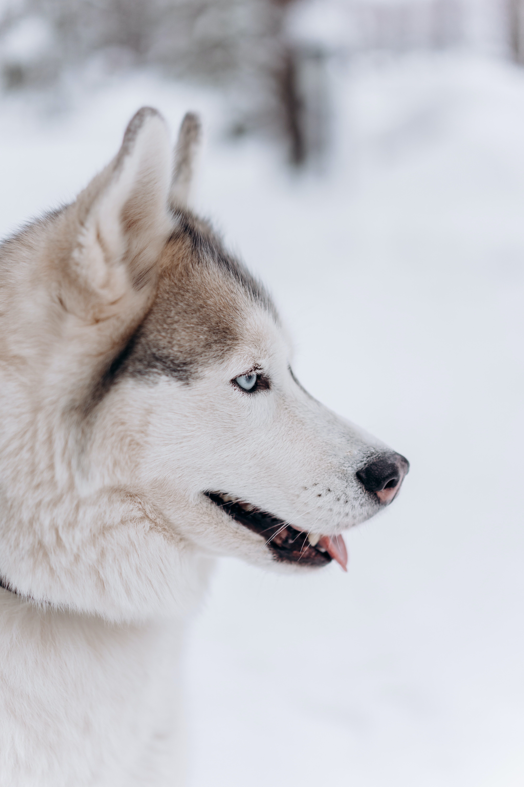

Alaskan dogs all originated from the cold north. The larger Alaskan dogs were used to hunt, herd, and guard. The smaller Alaskan dogs were used primarily as household pets. It is speculated that these dogs were from Asia and migrated during the last ice age. Alaskan dogs are specified as Spitz Dogs. Spitz Dogs can withstand cold and harsh weather climates and are therefore referred to as Northern Breeds. Species of Alaskan dogs have similar features that make them easily distinguishable.

Interesting facts about Alaskan Dog Breeds
Also known as Spitz
Originated from the north
Also known as Northern Breeds
Well suited to live in harsh climates
Have a dense undercoat that keeps them insulated and warm
Have a thick, weather-resistant top coat that helps trap and conserve body warmth
Most all of them have a wedge-shaped head that resembles a foxes
They also have a long, thick tail that is carried over their back instead of under
Their small ears reduce the risk of them getting a frostbite
Their paws are covered with thick fur that protect the paws from getting a frostbite and help the dogs walk on ice
Alaskan dogs can vary in size from being huge to very small
Look like they are always smiling
Very intelligent breed
Independent
Harder to train than other breeds
Very loyal to owners
Love to work, work brings them joy
Can be aggressive
These dogs can be categorized into categories based on the job they were historically meant to do
Sled dogs are extremely athletic
Sled dogs get along with other dogs well
Hunter dogs are the most powerful dogs
Hunter dogs are instinctively trained to hunt both small and large prey
Watch dogs are the smallest Spitz dog breed
Guard dogs are very good at protecting the owner’s property
Guard dogs are known to being the most dangerous type of Spitz dog breed
Herder dogs were used since the ice ages
Herder dogs are particularly skillful in herding sheep, cattle, and reindeer